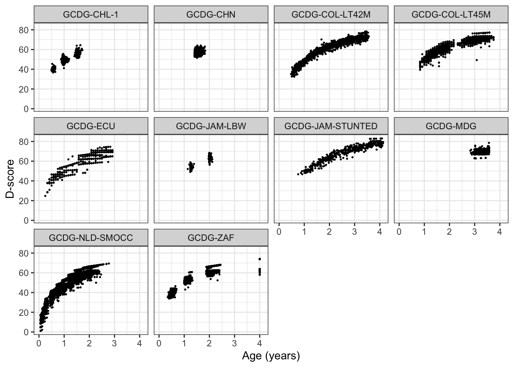

The goal of childdevdata is to support innovation in child development. The package
- Makes anonymous microdata available to the research community;
- Adopts a simple naming schema for developmental milestones;
- Supports multiple measurement instruments;
- Eases joint analyses of the data.
The current version bundles milestone data from eight studies, x children and x measurement made on z instruments.
Installation
You can install the development version of childdevdata from GitHub with: –>
install.packages("remotes")
remotes::install_github(repo = "d-score/childdevdata")Example
The following example visualises how the proportion of toddlers that are able to walk increases with age.
library(childdevdata)
library(ggplot2)
# we use the Dutch SMOCC data
data <- with(gcdg_nld_smocc,
data.frame(age = round(agedays/365.25, 4),
walk = ddigmd068))
ggplot(na.omit(data), aes(age, walk)) +
geom_point(cex = 0.5) +
geom_smooth(method = "gam", formula = y ~ s(x, bs = "cs"),
se = FALSE, lwd = 0.5) +
theme_bw()
Overview of available dataset and documentation
The package contains multiple datasets. Obtain the list of datasets by
data(package = "childdevdata")$results[, "Item"]
#> [1] "gcdg_col_lt42m" "gcdg_col_lt45m" "gcdg_ecu" "gcdg_jam_lbw"
#> [5] "gcdg_jam_stunted" "gcdg_mdg" "gcdg_nld_smocc" "gcdg_zaf"The documentation of the data can be found by typing into the console:
?gcdg_col_lt42mThe size of the data is
dim(gcdg_col_lt42m)
#> [1] 1311 627The first six rows and first nine columns are
head(gcdg_col_lt42m[, 1:9])
#> # A tibble: 6 x 9
#> ctrycd cohort cohortn subjid agedays sex gagebrth aqicmc010 aqicmc013
#> <chr> <chr> <int> <int> <int> <chr> <int> <int> <int>
#> 1 COL GCDG-COL-LT… 50 5000001 660 Fema… 224 NA NA
#> 2 COL GCDG-COL-LT… 50 5000002 1166 Fema… 280 NA NA
#> 3 COL GCDG-COL-LT… 50 5000003 314 Fema… 273 NA NA
#> 4 COL GCDG-COL-LT… 50 5000004 1239 Fema… 259 NA NA
#> 5 COL GCDG-COL-LT… 50 5000005 679 Fema… 224 NA NA
#> 6 COL GCDG-COL-LT… 50 5000006 1074 Fema… 252 NA NAThe first seven columns are administrative and background variables. Column numbers eight and up hold the milestone scores.
Combining data
Concatenating two or more data is straightforward using dplyr. The following code concatenates all datasets.
library(dplyr)
#>
#> Attaching package: 'dplyr'
#> The following objects are masked from 'package:stats':
#>
#> filter, lag
#> The following objects are masked from 'package:base':
#>
#> intersect, setdiff, setequal, union
alldata <- bind_rows(gcdg_col_lt42m, gcdg_col_lt45m, gcdg_ecu, gcdg_jam_lbw, gcdg_jam_stunted, gcdg_mdg, gcdg_nld_smocc, gcdg_zaf)
dim(alldata)
#> [1] 25336 1280Both the number of rows and the number of columns have increased. Milestones not appearing in a particular data obtain all missing (NA) scores.
The number of records per cohort is
table(alldata$cohort)
#>
#> GCDG-COL-LT42M GCDG-COL-LT45M GCDG-ECU GCDG-JAM-LBW
#> 1311 1335 667 443
#> GCDG-JAM-STUNTED GCDG-MDG GCDG-NLD-SMOCC GCDG-ZAF
#> 477 205 16722 4176Calculating D-score and DAZ
The dscore package calculates the D-score and the D-score adjusted for age Z-score (DAZ) for all cases:
library(dscore)
alldata$age <- round(alldata$agedays/365.25, 4)
d <- dscore(alldata)
head(d)
#> a n p d sem daz
#> 1 1.81 29 0.345 58.0 0.950 -0.932
#> 2 3.19 49 0.857 71.8 0.566 0.515
#> 3 0.86 41 0.537 45.4 0.541 -0.282
#> 4 3.39 36 0.556 69.3 0.523 -0.773
#> 5 1.86 42 0.691 65.3 0.542 1.475
#> 6 2.94 44 0.795 70.0 0.511 0.297
dim(d)
#> [1] 25336 6We visualise the D-score distribution by age per cohort as
alldata <- bind_cols(alldata, d)
ggplot(alldata, aes(age, d, group = cohort)) +
geom_point(cex = 0.3) +
facet_wrap(~ cohort) +
theme_bw()
#> Warning: Removed 253 rows containing missing values (geom_point).
Why this package?
We all want our children to grow and prosper. While there is no shortage of apps and instruments to track child development, it is often unclear which data went into the construction of these tools. In order to improve measurement and norm setting of child development, we need child-level response data per milestone and age. However, no such public dataset seem to exist. The childdevdata package fills that void.
The package grew out of a project in which we collected milestone data from 16 cohorts. See Weber et al. (2019) and http://d-score.org/dbook2/ for results. Eight of the cohort owners graciously decided to make their data available for third parties. We are grateful to them.
How to use the data?
Tremendous effort has gone into the collection and harmonisation of the data. You can use the data in this package under the CC BY 4.0 license. Basically, this means that you may share and adapt the data, on the condition that you give appropriate credit and clearly indicate any changes you’ve made. See the license text for details.
We expect that you will properly cite the source data when you use the data in your own product or publication, as follows:
- If you use one dataset, please cite the publication(s) given in the documentation of that dataset.
- If you use two or more datasets, cite the publication(s) for each dataset and cite the
childdevdatapackage.
The citation of the childevdata package is
@Manual{childevdata-package,
title = {Child Development Data},
author = {Stef {van Buuren} and Iris Eekhout and Marta Rubio Codina and Orazio Attanasio and Costas Meghir and
Emla Fitzsimons and Sally Grantham-McGregor and Maria Caridad Araujo and Susan Walker and Susan Chang and
Christine Powell and Ann Weber and Lia Fernald and Paul Verkerk and Linda Richter},
year = {2021},
note = {R package version 0.1.0},
url = {https://github.com/d-score/childevdata},
}Want to contribute?
Do you have similar data and want to help others to advance the field? Please let us know. We hope that the childdevdata package may continue to grow into a valuable resource for developers and researchers worldwide.